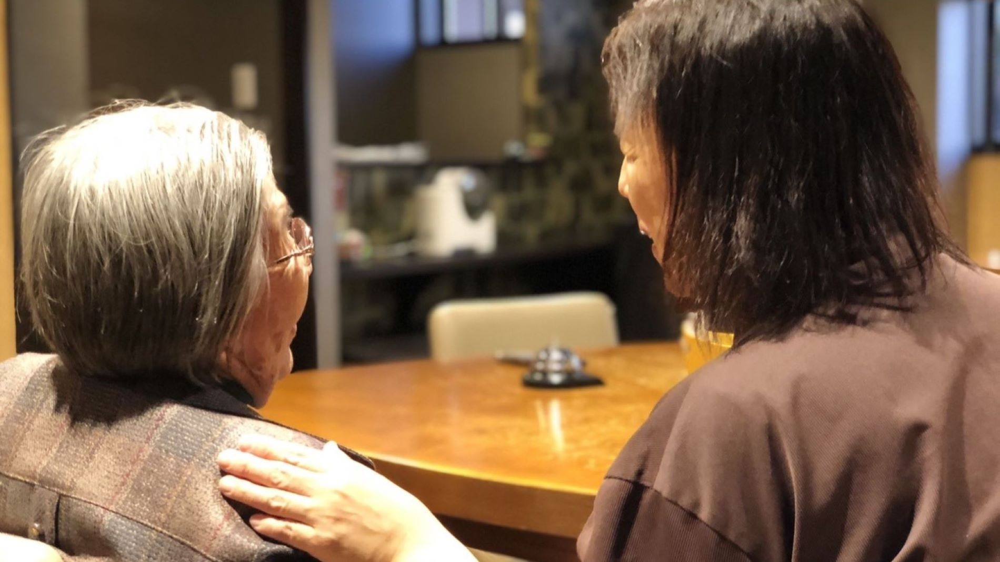
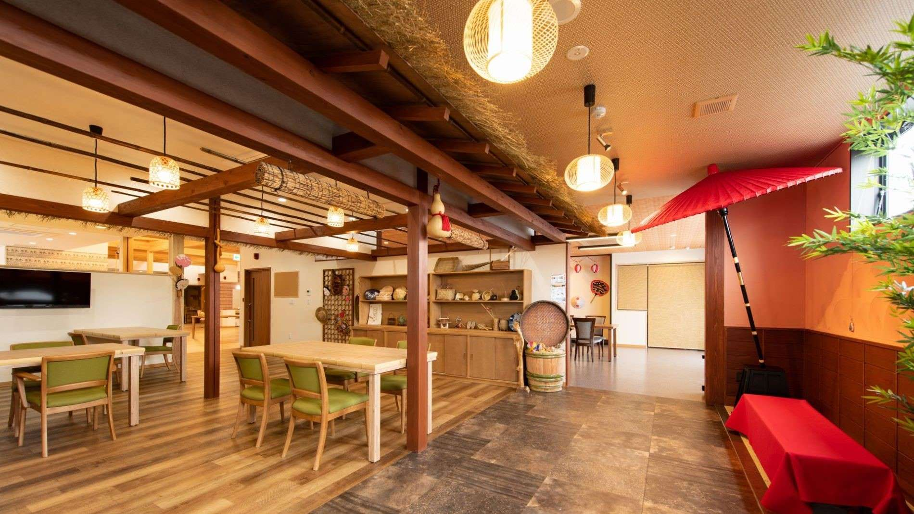
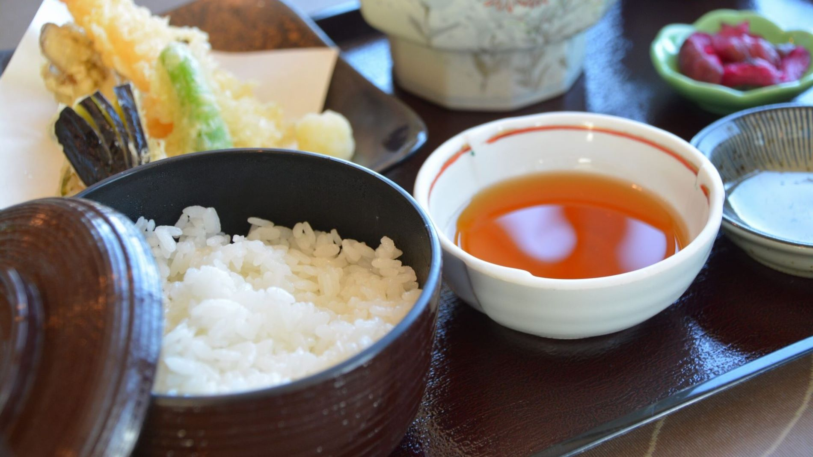

デイサービスから訪問看護、難病ケア、サービス付き高齢者向け住宅まで。群馬・栃木・埼玉の3県で、地域の暮らしに寄り添い続けています。
介護保険サービスから保険外の暮らしの支援まで。ひとつの窓口で、その方に合う組み合わせをご提案できるのが孫の手の強みです。

3県14拠点のデイサービスと6つの訪問看護ステーション。難病特化型デイなど専門性の高いケアも。

「人生の奥座敷 孫の手」。旅館のような和の空間で、自分らしい暮らしを続けられる住まいです。

シニアパークジム「パンパカパーン」、便利屋「すけっと孫の手」など、保険の枠を超えた支援も。
季節の行事、リハビリの成果、スタッフの素顔——。ご家族・ケアマネジャー・求職者が知りたいのは、パンフレットではなく現場の空気です。※週1回の更新を外部広報担当が代行するイメージ
看護師・リハビリ職・介護職・ケアマネジャー。3県25拠点だから、家の近くで、ライフステージに合わせて働けます。
訪問看護からサ高住、難病ケアまで事業が幅広いから、キャリアの選択肢も豊富です。オンライン職場見学・相談も実施中。※応募導線は御社の採用サイト（magonote-saiyo.jp）へ接続します
ご家族には安心を、求職者には職場の空気を。25拠点のネタを拾って発信し続ける「手」をご用意します。※アカウント運用体制もあわせてご提案します
| 社名 | 株式会社 孫の手 |
|---|---|
| 本社 | 群馬県太田市大原町156-3 |
| 代表 | 代表取締役 浦野 幸子 |
| 事業内容 | 居宅介護支援（3拠点）／訪問看護ステーション（6拠点）／デイサービス（14拠点）／難病特化型デイサービス／ショートステイ／サービス付き高齢者向け住宅／シニアパークジム／生活支援サービス |
| 展開エリア | 群馬県・栃木県・埼玉県 |
| 電話 | 0277-46-7010 |
※設立年・沿革・許認可番号などは御社と相談のうえ正確に記載します。